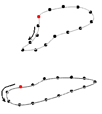
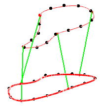
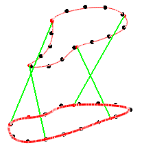
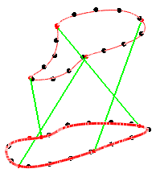
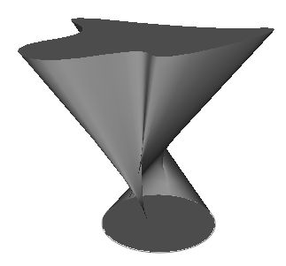
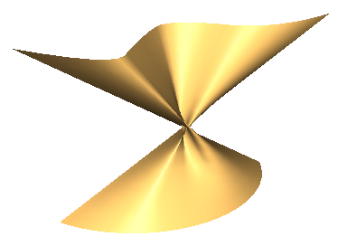

sgCObject* sgSurfaces::LinearSurfaceFromSections(const sgC2DObject& firstSide, const sgC2DObject& secondSide, double firstParam, bool isClose)
Description:
Creates a surface or a solid by moving the end points of a line segment along two different curves.
Arguments:
firstSide - path curve for the first end point of the ruling line segment,
secondSide - path curve for the second end point of the ruling line segment,
firstParam - parameter of the point on the first path curve connecting with the start point on the second path curve; this parameter defines the spiral degree of the new object and takes the value from 0 to 1. The point on the object can be found using the GetPointFromCoefficient() function. This parameter is ignored if the firstSide object is not closed .
isClose - whether to close to a solid in case firstSide and secondSide are flat and closed curves without self-intersections.
Returned value:
Returns the pointer to a newly created object. If the function fails NULL is returned.
Explanation:
While constructing objects using this function special attention should be paid to the start parameter of the first curve and to orientation (can be changed using ChangeOrient()) of both the curves. Let's illustrate it with examples.
We have two closed curves which can be used as path curves to create a surface:

The start points of both curves are indicated red and objects orientation as arrows.
Below you can see different cases of various spirals of obtained surfaces with different initial parameters of the first curve
firsParam = 0 |
fistParam = 0.12 |
firstParam = 0.75 |
 |
 |
 |
It's obvious that the objects will have different spiral degrees.
Special attention should be paid to the objects orientation. A new object is created by moving the end point of a line segment along two path curves. But along each curve each end point moves in the curve direction. You can change the object direction round using the ChangeOrient() function.
The wrong orientation may cause such results:
 |
 |
In case of unclosed objects only objects orientation is considered.
See also: